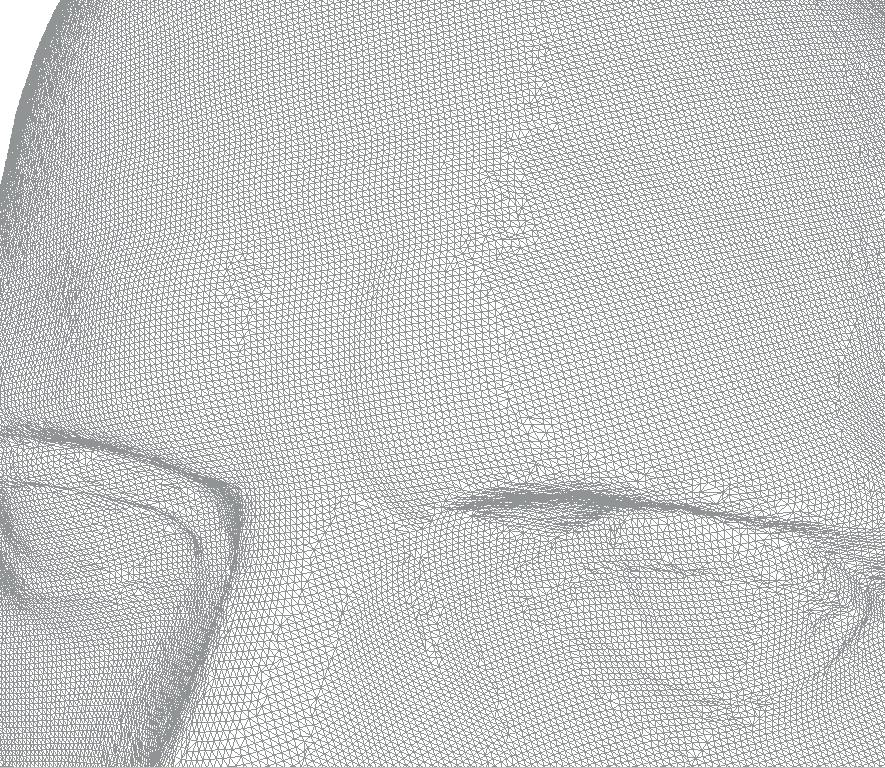

Model name:
Julius Caesar - full resolution edited
(model ID: 432-Julius_Caesar_-_full_resolution_edited)
Belongs to group:
432-Julius_Caesar_-_full_resolution_edited

Model info:
Category:
ManifoldSurfaceMesh
Description:
Mask of Julius Caesar scanned with a Minolta Vivid 910 laser scanner. The group level model is the full resolution shape (800000 triangles) edited to remove errors introduced by scanning and reconstruction phases.
Format:
OFF
Size:
296441KB
Uploader:
INRIA
Creator:
INRIA
Upload date:
2006-01-16 17:51:18.0
Downloads:
38
Group downloads:
88
Other metadata :
hasNumberOfVertices:
387900
hasNumberOfEdges:
1162063
isVerified:
true
hasNumberOfBoundaries:
1
hasUploadDate:
2006-01-16 17:51:18
hasObjectCategory:
ANATOMY|CULTURAL HERITAGE|
belongsToShapeGroup:
hasMetadataCompleteness:
79.0
isOriented:
true
hasRelatedShape:
hasUploader:
INRIA
hasScaleOfOriginal:
hasMaterial:
hasObjectCategoryURI:
hasNumberOfIsolatedVertices:
0
hasNormals:
false
isRegular:
false
isOriginatedBy:
hasStructuralDescriptor:
hasRelatedResource:
hasLevelNumber:
hasOwner:
INRIA
isOrientable:
true
isConformal:
hasQuality:
5
hasBoundingBoxDiagonal: